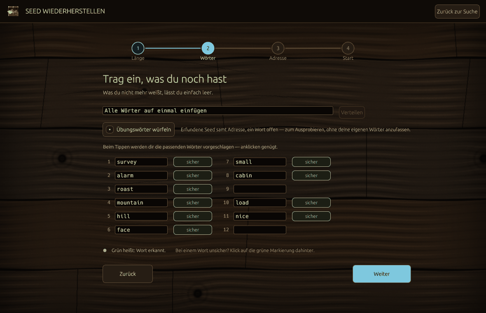
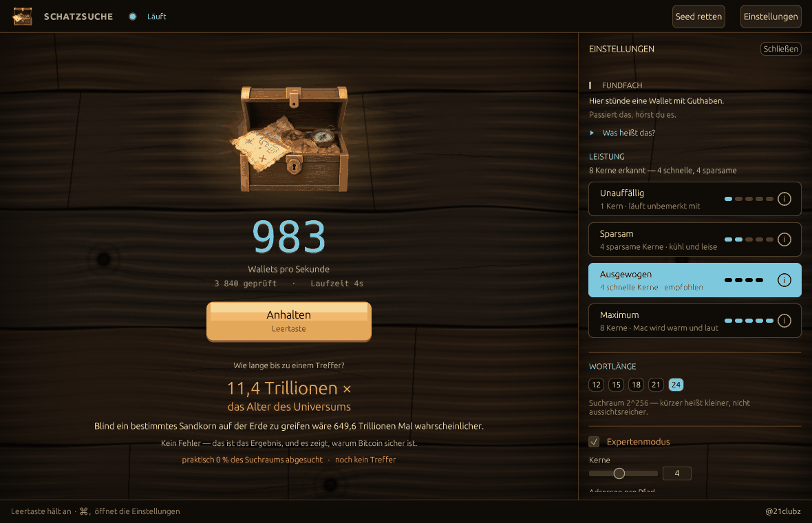

Dasselbe Programm errät auch fremde Wallets — der Zähler steht auf 0 und bleibt da. Wer weiß, was unmöglich ist, weiß auch, was geht.
Die Gegenprobe läuft weiter unten: Wallets raten, null Treffer — der Beweis ↓
Ein Wort fehlt? Das sind 2.048 Möglichkeiten. Zwei? Ein paar Millionen. Für deinen Rechner ist das eine kurze Liste — Schatzsuche probiert sie durch und hört auf, wenn deine Adresse herauskommt.
Drei offene Wörter gehen auch noch, das dauert eher einen Tag. Ab vier sagt dir das Programm vor dem Start ehrlich: aussichtslos.
Es gibt Dienste, die für genau diese Suche einen Anteil deiner Wallet nehmen. Bei ein, zwei offenen Wörtern machen beide dasselbe:
Fair bleibt fair: Schwere Fälle — kaputte Geräte, gelöschte Datenträger — sind echte Forensik und echte Handarbeit. Um die geht es hier nicht.

Ein Assistent, vier Fragen — Länge, Wörter, Adresse, Start. Zurück geht es jederzeit.
Füg alle auf einmal ein, ein ? steht für ein fehlendes Wort. Beim Tippen
schlägt Schatzsuche die richtigen Wörter vor.
Jedes Wort ist sicher, unsicher oder verrutscht — mehr musst du nicht wissen. Den Rest macht das Programm.
Vor dem Start rechnet es dir aus, wie lange die Suche dauert — und fragt, ob du willst. Währenddessen siehst du die echte Restzeit.
Mit deiner Adresse bleibt am Ende genau ein Ergebnis übrig. Ohne bekommst du eine kurze Liste zum Vergleichen.
Üben kannst du ohne echte Wörter — mit „Übungswörter würfeln“. Probier es aus →
Kein Fehler — das ist das Ergebnis, und es zeigt, warum Bitcoin sicher ist.
2.048 Möglichkeiten je offenem Wort sind eine Liste. Der ganze Schlüsselraum ist ein Universum.
Reine Nachbildung: Dieses Feld rechnet nichts Echtes — es zählt hoch und würfelt Zeichenketten, die nur aussehen wie Adressen. Das echte Programm gibt es unter „Herunterladen“.
Gerechnet mit 3 343 Wallets pro Sekunde — voller Einsatz auf einem M1 — gegen eine Datenbank aus 5 Millionen Adressen.
Werkzeuge, die fremde Wallets wirklich leeren, suchen nicht zufällig — sie zielen auf Brainwallets, kaputte Zufallsgeneratoren oder Wortlisten. Schatzsuche tut nichts davon. Das ist der ganze Unterschied, und er ist nachlesbar.
Jeder Seed kommt direkt aus dem Zufall des Betriebssystems. Nichts lenkt die Suche in Richtung schwacher oder bekannt kaputter Schlüssel.
Kein Server, kein Konto, kein Mitzählen. Ein Treffer landet auf deiner Festplatte und sonst nirgends.
Wer mag, lässt sich einen Fund melden — aber die Meldung kann gar keinen Seed enthalten: Das Feld dafür existiert im Code nicht.
MIT-Lizenz — der ganze Quelltext liegt offen. Der Kern steht in src/engine.rs:
Zufall rein, nichts dazwischen.

Beim Start sieht sich Schatzsuche deinen Rechner an — „8 Kerne erkannt, 4 schnelle, 4 sparsame“ — und wählt eine vernünftige Voreinstellung. Vier Stufen stehen zur Wahl:
Läuft auf macOS, Linux und Windows — als Fenster oder im Terminal; auf dem Mac öffnet der Doppelklick das Fenster.
Kostenlos und quelloffen. Die Links führen immer zur neuesten Version auf GitHub.
Die Programme sind nicht signiert — das bräuchte ein bezahltes Entwicklerkonto. So kommst du am Hinweis vorbei:
cargo build --release,
die Anleitung steht im README.